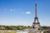
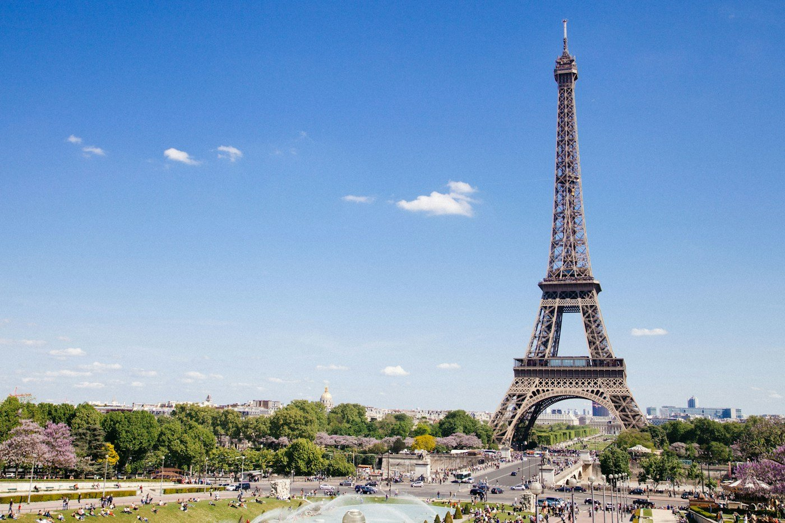

 |
Главная | Архитектура | Культура | Язык | Прогулка | Галерея |
| Анкета | DOM | Кириллица / латиница | Задача 1009 | Таблица памятников | ЮНЕСКО: берега Сены |
Архитектура хранит следы технологий, вкусов и представлений о власти. Четыре эпохи помогают увидеть за красивым фасадом историю.
Эпохи | На что смотреть | Сравнение памятников
XII–XV века • Готика
Высота, свет, каркасСтрельчатые арки, нервюрные своды и аркбутаны помогают узнавать готический собор. Большие окна с витражами становятся важной частью пространства. Пример — собор Парижской Богоматери. |
XVI век • Ренессанс
Обращение к античностиСимметрия, ордерные элементы и ясные пропорции соединяются с французской традицией замков. В долине Луары особенно заметен переход от крепости к резиденции; пример — Шамбор. |
XVII век • Классицизм
Порядок и перспективаОсевая композиция, ритм фасадов и связь дворца с регулярным садом. Версаль показывает, как архитектура может выражать идею королевской власти. |
XIX век • Новый масштаб города
Бульвары и инженерияПерестройка Парижа при Наполеоне III и префекте Османе меняет уличную сеть. В конце века Эйфелева башня превращает металлическую конструкцию в самостоятельный символ. |
|
 |
|
| Объект | Что искать | Контекст | Подробнее |
| Нотр-Дам | Стрельчатые арки, окна-розы, аркбутаны | Средневековый собор | Сайт собора |
| Шамбор | Ренессансный декор и сложный силуэт кровли | Королевский замок | Домен Шамбор |
| Версаль | Ось дворца и сада, регулярная композиция | Королевская резиденция | История Версаля |
| Эйфелева башня |
Решётчатая металлическая конструкция | Всемирная выставка 1889 года | История башни |